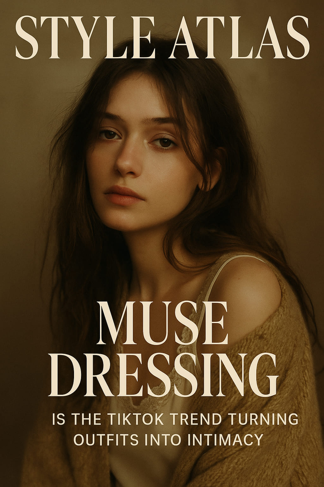

“Muse Dressing” Is the TikTok Trend Turning Outfits Into Intimacy
Forget influencers. The new style formula asks: if someone were obsessed with your look—what would you wear?
On TikTok this week, a soft but powerful trend has taken over feeds, moodboards, and captions: Muse Dressing. It’s more than just an outfit formula—it’s a way of presenting yourself not to the world, but to the one person who might watch you closely. Carefully. Lovingly.
“Muse Dressing is not about performance. It’s about suggestion.” — Ada Renoir, fashion curator and creative coach
What Is Muse Dressing?
At its core, Muse Dressing is styling oneself as if you're the object of inspiration—not attention. It taps into the fantasy of being observed—by an artist, a director, a former lover, or a stranger on the metro who sketches you in their notebook. The look isn't about being perfect—it's about being memorable.
On TikTok, users caption their videos with lines like:
- “if someone was writing a book about me…”
- “the girl in the third frame of a Sofia Coppola film”
- “dressing like a sketch left behind in a stranger’s journal”
The Visual Style of a Muse
The aesthetic is cinematic, textured, poetic. Think:
- Curtains of hair falling naturally, not blown out
- Oversized sweaters falling off one shoulder
- Handwritten notes tucked into coat pockets
- Vintage loafers, satin nightgowns, glass rings, and faded denim
Color palettes lean dusty, earthy, or slightly melancholy. Light is soft. Accessories are personal, not statement. A scar on the knee might be the most styled detail of the whole look.

Not styled to impress—styled to be remembered.
Why It’s Resonating Now
In an era of curated feeds and high-impact trends, Muse Dressing feels like a retreat. It's private. It’s internal. It suggests story over spotlight, emotion over branding. For Gen Z—who live between visual identity and emotional fluency—this trend hits an important note: being seen without trying to be visible.
"The Muse look is romantic, quiet, and unsellable. And that’s why it works.” — Aisling Huerta, stylist & director
Top Audio Trends Driving It
- Soundtracks from indie films and romantic dramas
- Voiceovers with lines like: “She never knew he was watching her from the train…”
- Spoken word poetry overlays
These are used not to explain the outfit, but to set a scene. The clothes become a narrative thread.
How to Style a Muse Look
- Start with a story. Are you someone’s memory? Someone’s idea? Someone’s almost-lover?
- Layer emotion. Choose pieces with feeling: a hand-me-down shirt, a frayed ribbon, old ballet flats.
- Dress with softness. No structure. No show. Just drape, comfort, and poetry.
- Let something stay undone. A collar flipped, a button skipped. The beauty is in the detail that’s off.

You’re not dressing for likes. You’re dressing for a painting that may never exist.
Is It Just a Trend?
Perhaps. But it also taps into something timeless. We've always romanticized the idea of being a muse. Of being seen with artistic eyes. This trend simply gives us the language, mood, and wardrobe to live that fantasy—even for a moment, even for ourselves.
And that, in itself, is a kind of fashion revolution.
Words by Style Atlas